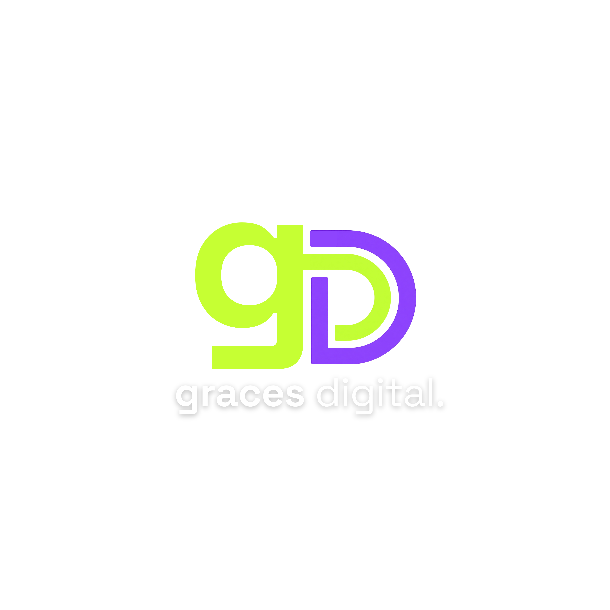

NOSSO TRABALHO
Ideias que ganharam forma.
Projetos criados para transformar ideias em marcas, conteúdos e experiências digitais.

Vamos criar ↗NOSSO TRABALHO
Projetos criados para transformar ideias em marcas, conteúdos e experiências digitais.